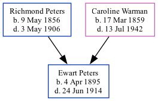

Ewart A Peters 1895 - 1914
[ Home ] | [ Calendar ] | [ Surnames Index ] | [ Family History ]The 6th of 7 children of Richmond Peters (a farmer) and Caroline Warman, Ewart Peters, the third cousin twice-removed on the father's side of Nigel Horne, was born in New Brunswick, Canada on Apr 4, 18951,2.
Throughout his life, he lived in St Marys, York, New Brunswick in 19013; and in York, New Brunswick in 19111 which is where he died on Jun 24, 19142 (died by drowning). He was buried at Bradley-Gill Memorial Cemetery, St Marys, York, New Brunswick after Jun 24, 19142.
Parents
- Richmond Noble was born on May 9, 1856
- Caroline Lucinda was born on Mar 17, 1859
Citations
- 1911 Census of Canada Online publication - Provo, UT, USA: Ancestry.com Operations Inc, 2006. .Original data - Library and Archives Canada. Census of Canada, 1911. Ottawa, Ontario, Canada: Library and Archives Canada, 2007. http://www.collectionscanada.gc.ca/databases/census-19 (Marital Status: Single; Relation to Head of House: Son)
- Canada, Find A Grave Index, 1600s-Current Ancestry.com Operations, Inc.
- Canada Census 1901 - Findmypast (was the son of the head of the household)
Media
Canada Census 1901 - CAN/CENSUS/1901/00742762
Family Tree
Generated by Ged2Site. Last updated on Jul 20, 2025